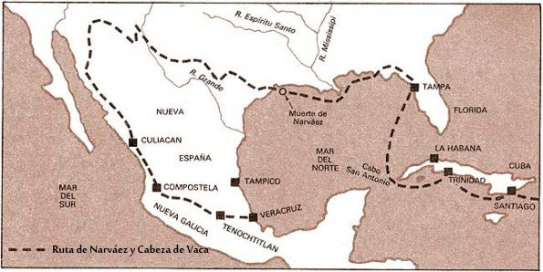

Hernán Cortés fue quien conquistó el impertio azteca, organizó los nuevos territorios, nombró autoridades y entregó tierras e indigenas a sus capitanes y soldados surgiendo así la epoca colonial y el Virreinato de la Nueva España.
Los españoles Álvar Núñez Cabeza de Vaca, Alonso del Castillo, Andrés Dorantes de Carranza y un esclavo llamado Esteban (Estebanico) fueron los primeros que pisaron tierras chihuahuenses. Naufragaron en 1527 y caminaron hasta que fueron rescatados en 1536.

Las riquezas de Cibola y encontrar el reino de Quivira fueron los principales intereses de la expediciones.
Francisco Vázques de Coronado emprendió en 1540 una expedición sin ningún resultado.
En 1562 Francisco de Ibarra partió de Zacatecas y recorrió lo que ahora es Durango, Chihuahua, Sonora, Sinaloa y parte de Coahuila y llamó Nueva Vizcaya, él fue nombrado su primer gobernador.
En 1564 un soldado llamado Rodrigo del Río y Loza, descubrió yacimientos minerales y fundó Santa Barbola (Santa Barbara).
En 1597 Juan de Oñate salió de Santa Barbara y cruzó una linea recta pasando por el centro de Chihuahua hasta el río Bravo.


Delicias, Jiménez, Camargo, Chihuahua y Juárez, son algunas ciudades que tienen este trazo en la organizacion urbana y que es parte del legado cultural. El español y la religón catolica también forman parte de ese legado.